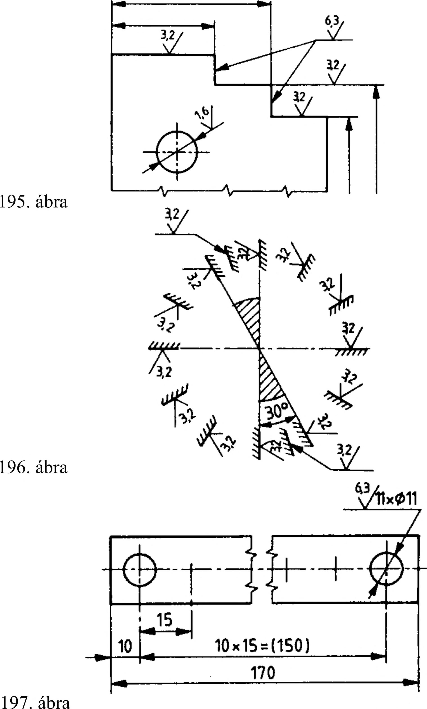

9. Felületminőség megadása 9.4. Az érdesség megadása géprajzon Alapjel Vonalszakasz A felületi érdességet a rajzon az érdesség jelével, az átlagos érdesség vagy egyenetlenségmagasság mérőszámával és szükség esetén az érdesség egyéb kiegészítő adatával kell megadni. A rajzokon az alkatrészek megmunkálása során megengedhető legnagyobb átlagos felületi érdességet kell előírni. Általában az átlagos érdességet írjuk elő, ezért ennek betűjelét (Ra) nem kell feltüntetni. Az egyenetlenségmagasság betűjelét (Rz) mindig fel kell tüntetni a mérőszám előtt. Az érdességi jelet vékony folytonos vonallal rajzoljuk, felépítését a 193. ábrán láthatjuk. Az érdességi jel kiegészíthető a megmunkálásra és az ellenőrzésre vonatkozó utasításokkal, valamint egyéb adatokkal: -a az érdesség betűjelének és számértékének a helye; - b a megmunkálási és ellenőrzési utasítás helye; - c az alaphossz mm-ben megadott számértékének a helye; - d a felületi egyenetlenségek irányának jelölésére fenntartott hely; -/az Ra -tói különböző érdességi érték. A vonalszakaszt csak akkor kell megrajzolni, ha mérési vagy ellenőrzési utasítást és/vagy az alaphosszt vagy a hullámosságot kívánjuk megadni. Az érdességi jelet a megmunkálási igénytől függően különböző módon rajzolhatjuk. Ha csak az alapjelet rajzoljuk meg, akkor ezzel azt jelezzük, hogy a megmunkálás módja közömbös a számunkra. A forgácsoló megmunkálással elérendő érdességet zárt ékkel jelöljük, forgácsolás nélküli megmunkálás esetén (kovácsolás, hengerelés, mángorlás, öntés stb.) a körös nyitott éket használjuk (194. ábra). Az érdességi jelet a rajzon úgy kell elhelyezni, hogy annak csúcsa a felület kontúrvonalával kívülről érintkezzen. Az érdességi jelet elhelyezhetjük még a méretsegédvonalon vagy a felülethez nyíllal kapcsolt mutatóvonalon, helyszűke esetén a méretvonal meghosszabbításán is (195. ábra). Az érdességi jelet semmilyen vonal nem metszheti. Ha metszené, akkor azt a vonalat (kontúr-, méret-, segédvonal stb.) meg kell szakítani. Az érdesség számértékét az érdesség jelében kell megadni. Az érdesség számértékét úgy kell felírni, hogy a rajz többi méretszámával, ill. feliratával azonos irányból legyen olvasható (196. ábra). Az alkatrész minden egyes felületének érdességét függetlenül a vetületek számától, csak egy helyen adjuk meg, lehetőleg azon a képen, amelyen a felület helyét meghatározó méret is megtalálható. A töréssel megszakított felületen is csupán egy helyen kell megadni a felületi érdességet. Ugyancsak egyszer kell megadni az osztással megadott furatok, fogak érdességét is (197. ábra). Ha az érdesség megengedhető legkisebb értékét is elő kell írni, akkor az érdességet határértékekkel adjuk meg (198. ábra). Ha az alkatrész minden felülete azonos érdességű, akkor ezt az érdességet a rajz jobb felső sarkában kiemelten kell megadni. A kiemelt érdességi jelet is vékony folytonos vonallal rajzoljuk, nagysága a felülethez rajzolt jel l,4...2-szerese legyen (199. ábra). 48
